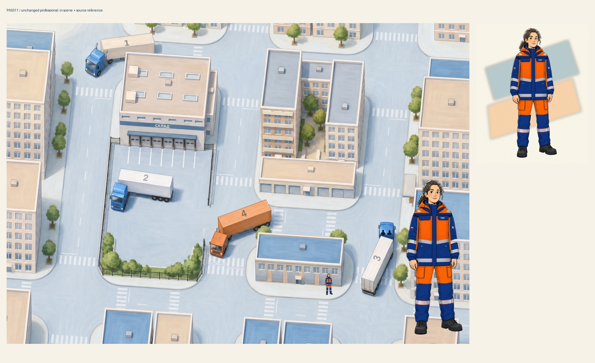
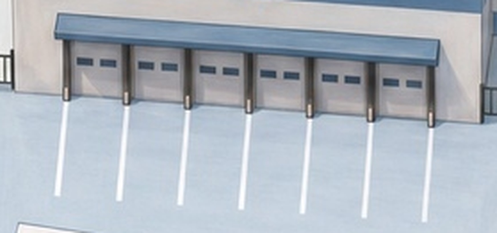
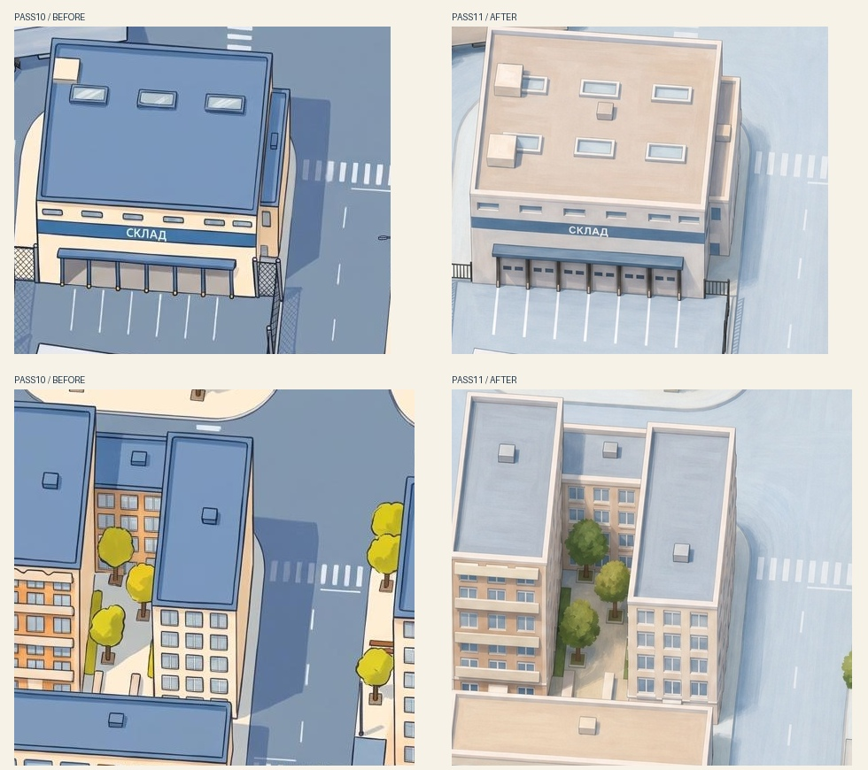
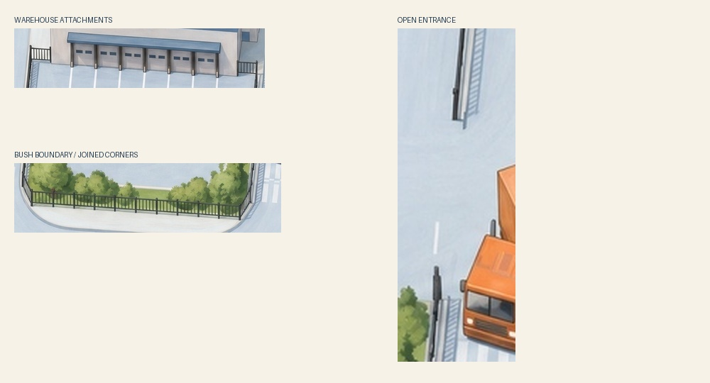

Город и неизменённая девушка
Проверка одной манеры рисования: девушка внутри города и крупно на переднем плане. Её изображение и цвета не менялись.

Шесть ворот — шесть мест
Семь линий обозначают границы мест. Ворота находятся между ними, а не на линии. Исправлены и исходная модель, и рисунок.

Тени и поверхности: до / после
Слева — версия 10. Справа — новая рисовка: вместо ровных заливок — цветовые переходы и мазки; вместо длинных угловатых теней — мягкое прилегающее затенение.

Машины и выхлоп
Дым выходит из труб за кабинами №1 и №4. Возраст не показан грязью или разрушением. В кабине №3 сохранены два человека.
Забор, требования встречи и проверки

Из встречи: мягкой должна быть вся рисовка, не только тени. Ориентир — первые экраны и девушка-профессионал, не старые катсцены. Машины должны быть понятны по виду и поведению без подписей «старая» или «медленная»; старая машина — потёртая, но не грязная развалина.
Эта страница проверяет рисовку и выхлоп неподвижных машин. Скорость и маршруты в новой рисовке ещё не перенесены. Исходные персонажи, основная игра и версии 07–10 не изменены.
Проверка разметки · Проверка забора · Проверки экрана · Источники и ограничения